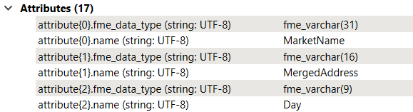
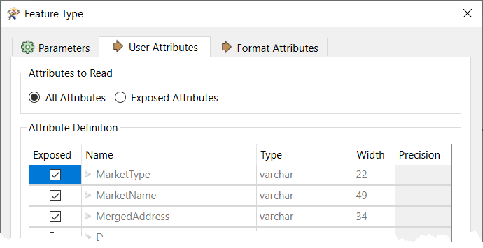

After completing this unit, you’ll be able to:
At a basic level, the SchemaScanner is fairly simple to operate. However, more complex scenarios revolve around how the different parameters are used and the exact values of incoming data.
The Empty attributes parameter controls the schema when incoming data has missing values:
However, this only applies to data where the entire dataset is missing a particular attribute value. In this dataset, for example, every value for MarketType is null. MergedAddress also has null values, but not for every record:
Given the above parameters, the output schema will not contain the MarketType field because there are no values at all for it:

However, MergedAddress is included because some records still do have values.
Now, say, for example, that we wanted to include MarketType in the output even though there are no values. There are two alternatives to the Ignore option:
Because there are no data values, the SchemaScanner cannot scan the data to guess the data type. Instead, it can either use a default data type (a varchar of unknown length) or trace back through the workspace to find any clues to the data type.
In this case, the reader itself has that information:

…so the SchemaScanner will use that and create an output schema where MarketType = varchar(22).
This exercise aims to add more data to the previous exercise's output by merging different source data sets.
Continue with the workspace from the previous exercise or open the starting workspace in FME Workbench (2022.1 or later). Now let's add the Vancouver Farmers Market CSV dataset, keeping the existing Cedar Cottage data. You can do this in one of two ways:
1a. Add a New CSV Reader.
Either use Reader > Add Reader from the menu bar or drag/drop the CSV file into the workspace canvas. Connect the new feature type to the AttributeManager input port.
1b. Edit the Existing CSV Reader
In the Navigator window, double-click the Source CSV parameter for the existing CSV Reader. When it opens, click the drop-down arrow and choose Select Multiple Folders/Files:
In the dialog, click Add Files and choose the file Vancouver Farmers Market CSV. Because the existing reader is dynamic, you won’t have to add a new feature type.
Run the workspace and inspect the output. You’ll notice that the Vancouver Farmers Market data has no values for MarketType, so their values are Null. Also, notice that the data has an extra field called Offerings, which Cedar Cottage is missing:
These fields were included in the output CSV, even though not all data possessed them. That’s because the SchemaScanner creates an inclusive schema, i.e., if only one feature possesses an attribute, it will be included in the output.
Now let’s create a different file for each day of the week, i.e., we wish to divide food markets into different outputs depending on which day they take place.
Open the parameters dialog for the writer feature type.
Change the CSV File Name parameter from fme_feature_type to the Day attribute by clicking the drop-down arrow.
Re-run the workspace and inspect the outputs in a Text Editor.
In the Saturday and Sunday files, some fields have null values, but the fields still exist because not every record is null:
In the Wednesday and Thursday files, some fields are entirely null. However, the fields still exist because there is only one output schema, and every output dataset uses it.
Let’s see how we could give each output a different schema.
View the SchemaScanner parameters. Enable Group Processing, and under Group By, choose the Day attribute.
Re-run the workspace. Notice that there are now four schema features, one per day of the week:
Notice that fme_feature_type_name - the attribute that sets the schema's name - defines the difference between each feature.
Inspect the output. If a dataset was missing an entire attribute, then that attribute is now absent in the output. Each dataset has its own schema, and the SchemaScanner is set to Ignore Empty Attributes.
Finally, let’s say we wanted to give each output its own schema, but we didn’t want empty attributes to be ignored. How would we do that?
View the SchemaScanner parameters again. Change the Empty Attributes parameter from “Ignore” to “Interpret Upstream Schema (Advanced).” Now FME will include those attributes, obtaining the information to create the schema from wherever it can find that upstream in the workspace.
Once again, run the workspace and inspect the Schema features, particularly the one for Thursday markets.
Previously the Thursday market did not have a MarketType attribute in its schema. Now it does, even though all of the values are empty. The type is fme_varchar(22) because FME could determine that from the reader schema.